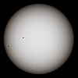

sun
phenomenon

Source: Wikipedia
Wikipedia Page (Something wrong with this association? Let us know.)
Wikidata Page (Something wrong with this association? Let us know.)
Occurs in:
- earth_sun__average_of_distance
- earth_sun__mean_of_distance
- earth_surface_viewpoint_sun__azimuth_angle
- sun_earth__solar_constant
- earth_surface_viewpoint_sun__elevation_angle
- sun_earth__solar_constant
- earth_surface_viewpoint_sun__zenith_angle
- earth_equator_plane_sun__declination_angle
- earth_surface_viewpoint_sun__apparent-magnitude_scale
- earth_surface_viewpoint_sun__azimuth_angle
- earth_surface_viewpoint_sun__elevation_angle
- earth_surface_viewpoint_sun_rising__time
- earth_surface_viewpoint_sun_setting__time
- earth_surface_viewpoint_sun__subtended_angle
- earth_surface_viewpoint_sun__zenith_angle
- sun_mars__solar_constant
- sun_venus__solar_constant